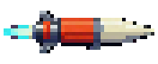

Animation production is stopped. Gameplay tuning continues without an animation signoff.
Fast ordinary enemy shots are capped at6pixels per tick; marked dash/shield fronts at8. Both phases use the same limits. Phase2 increases pressure with additional slow, committed shots at2–3pixels per tick instead of a speed multiplier. Their warnings, distinct shapes and dotted paths make their direction readable. Every Phase2 also has a very slow, committed missile: at most one missile, sharing the two-projectile background budget. Its path locks before release; move away or jump instead of chasing the projectile.
The new Phase2 mechanic starts alone. Background pressure appears later and clears around mandatory counters, gap launches and other protected commitments. Efficient clears can finish before every later pattern appears.

Very slow missileBoltOrbSeedDiamondRollerOpen an entry, then click Start run. Use arrows/WASD to move, Space to jump twice, Shift to dash, X to shield, C/V for standard specials, F for pickup power, R to retry and Escape to pause.
| Encounter | Full run | Phase 2 practice |
|---|---|---|
| Marina | Play | Practice |
| Last Light | Play | Practice |
| Mudline | Play | Practice |
| Ranch | Play | Practice |
| Neon | Play | Practice |
| Circuit | Play | Practice |
| Moonkeep | Play | Practice |
| Crown | Play | Practice |
| Hatchery | Play | Practice |
| Verse | Play | Practice |
| Rooftop | Play | Practice |
| Codebreak | Play | Practice |
For an attack that still feels too fast, report the boss, phase and named hit cause. Note whether the warning was clear, whether the projectile shape was recognizable, and whether a safe route remained. For Phase2, compare shot speed and density separately.
Current pacing evidence · Current checkpoint · Archived art plans
The file:// entry point still works. Automated checks do not replace human reaction and balance testing. Current work does not pull shared Fighter updates while PR #8 is pending.